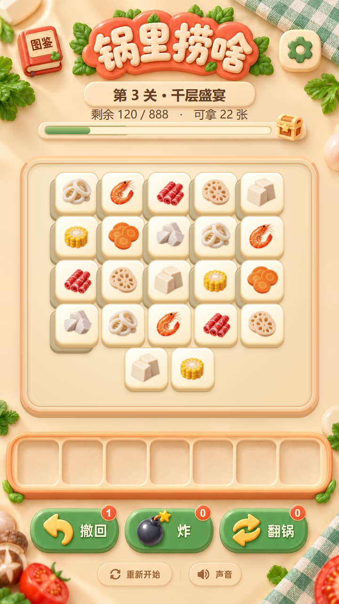

<!doctype html>
<html lang="zh-CN">
<meta charset="utf-8">
<meta name="viewport" content="width=device-width,initial-scale=1">
<title>锅里捞啥 · 01 / 04 主界面重设计</title>
<style>
*{box-sizing:border-box}body{margin:0;padding:30px 38px 36px;background:#f5f1e8;color:#3a4236;font:16px/1.6 'Microsoft YaHei',sans-serif}header{max-width:1100px;margin:0 auto 22px}small{font-size:12px;letter-spacing:2px;color:#8a765a}h1{font-size:27px;margin:6px 0 8px}p{margin:0;color:#7b776a}main{max-width:1100px;margin:auto;display:grid;grid-template-columns:1fr 1fr;gap:30px}h2{margin:0 0 4px;font-size:21px}article p{font-size:14px;margin-bottom:14px}img{display:block;width:100%;border-radius:12px;box-shadow:0 7px 24px #513d2020}nav{display:flex;gap:10px;margin-top:15px;flex-wrap:wrap}a{color:#6a4d32;text-decoration:none;border:1px solid #c7b89a;border-radius:5px;padding:6px 12px;background:#fffcf5;font-size:14px}footer{max-width:1100px;margin:25px auto 0;font-size:13px;color:#8a806e}@media(max-width:650px){body{padding:24px 18px}main{grid-template-columns:1fr}}
</style>
<header><small>锅里捞啥 / 主界面重设计 / 2026.10.30</small><h1>让游戏台成为小馆的一部分。</h1><p>铜边墨绿漆面与奶油软陶盛盘，各自接续原画的色彩、厚度和光影。</p></header>
<main>
<article><h2>01 · 市井朱红</h2><p>铜边嵌入式台面 · 暖玉牌面 · 收敛的叠层暗部</p><nav><a href="screen.html?theme=1&page=game1&w=720&h=1280">第一关</a><a href="screen.html?theme=1&page=game2&w=720&h=1280">第二关</a><a href="screen.html?theme=1&page=game3&w=720&h=1280">第三关</a><a href="screen.html?theme=1&page=game-reserve&w=720&h=1280">寄存区</a></nav></article>
<article><h2>04 · 奶油黏土</h2><p>柔边软陶盛盘 · 奶油圆角牌块 · 温暖柔和的投影</p><nav><a href="screen.html?theme=4&page=game1&w=720&h=1280">第一关</a><a href="screen.html?theme=4&page=game2&w=720&h=1280">第二关</a><a href="screen.html?theme=4&page=game3&w=720&h=1280">第三关</a><a href="screen.html?theme=4&page=game-reserve&w=720&h=1280">寄存区</a></nav></article>
</main><footer>设计预览 · <a href="index.html">返回完整设计评审</a></footer>
</html>
